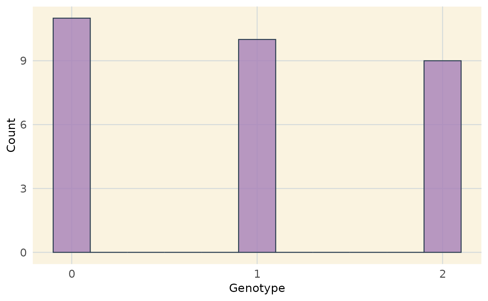

Generates a histogram of genotypic values (0, 1, 2)
from a genotype matrix and shows the distribution of genotypic classes.
Usage
plot_genotype_histogram(ans)
Arguments
- ans
A genotype matrix or data frame where:
Rows correspond to markers.
Columns correspond to individuals.
Values are numeric genotypes (0, 1, 2).
Value
A ggplot2 histogram object.
Examples
# Example genotype matrix
geno_matrix <- matrix(
sample(0:2, 30, replace = TRUE),
nrow = 10, ncol = 3,
dimnames = list(paste0("Marker", 1:10), paste0("Ind", 1:3))
)
# Generate and display the histogram
hist_plot <- plot_genotype_histogram(geno_matrix)
print(hist_plot)
